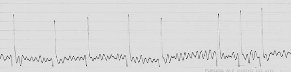
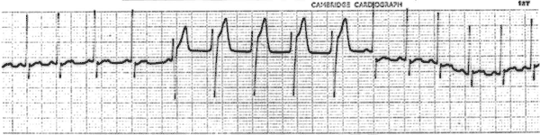
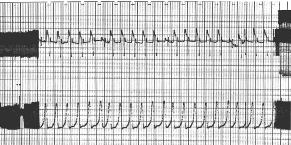
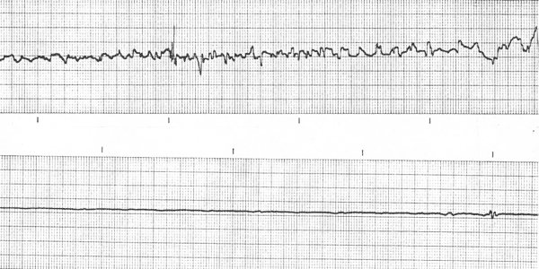

Arrhythmias are usually diagnosed by ECG: resist the temptation to treat the ECG rather than the animal.
hypoxia, electrolyte disturbances, other drugs eg. digitalis or frusemide.
Can be anything from improving the quality of life to producing a normal ECG. Determine if treatment is necessary ie. assess the risk/benefit.
which may include:
There is plenty of dispute about when to use which drug: my preferences are:
sinus bradycardia - atropine, glycopyrrolate
atrial flutter / fibrillation - all classes, digoxin
supraventricular tachycardia - Ia, IV, adenosine
junctional tachycardia - all classes except Ib
ventricular ectopic beats - III (II, Ib)
ventricular tachycardia - III (II, Ib)
heart block - pacemaker (isoprenaline)
Normal dog ECG.

Atrial fibrillation in a dog.
Single ventricular ectopic beat.
A run of VEs.
VEs verging on ventricular tachycardia. The bottom trace is blood pressure - note that the ventricular ectopic beats are still producing pulses.
Ventricular fibrillation (top) followed by asystole (bottom) and death.
Second degree heart block in a dog. Note that not every P wave results in a QRS complex.